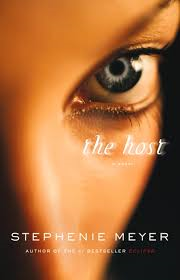

August
 The book for this month is The Host written by Stephenie Meyer.
Summary
"Melanie Stryder refuses to fade away. The earth has been invaded by a species
that take over the minds of their human hosts while leaving their bodies intact, and most of humanity has succumbed.
Wanderer, the invading "soul" who has been given Melanie's body, knew about the challenges of living inside a human:
the overwhelming emotions, the too vivid memories. But there was one difficulty Wanderer didn't expect: the former
tenant of her body refusing to relinquish possession of her mind.
Melanie fills Wanderer's thoughts with visions of the man Melanie loves-Jared, a human who still lives in hiding.
Unable to separate herself from her body's desires, Wanderer yearns for a man she's never met. As outside forces
make Wanderer and Melanie unwilling allies, they set off to search for the man they both love.
Featuring what may be the first love triangle involving only two bodies, THE HOST is a riveting
and unforgettable novel that will bring a vast new readership to one of the most compelling writers of our time."(amazon.com)
Thoughts
I really enjoyed this book. We got to see a different side of Stephenie Meyer than what we read in her Twilight series. The charactor development was great and the details of the underground compound was wonderful. I was able to read this book in a day, I just could not put it down.